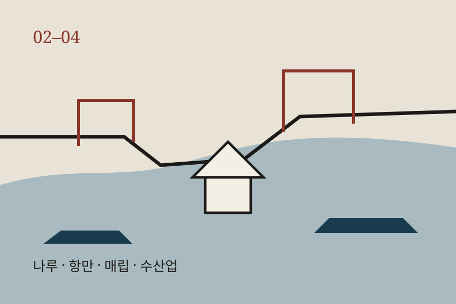
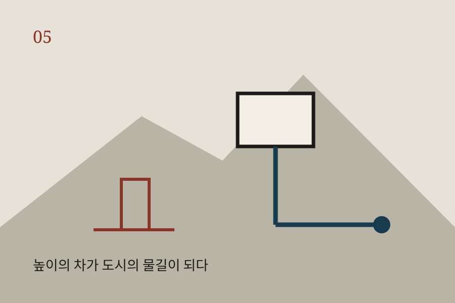
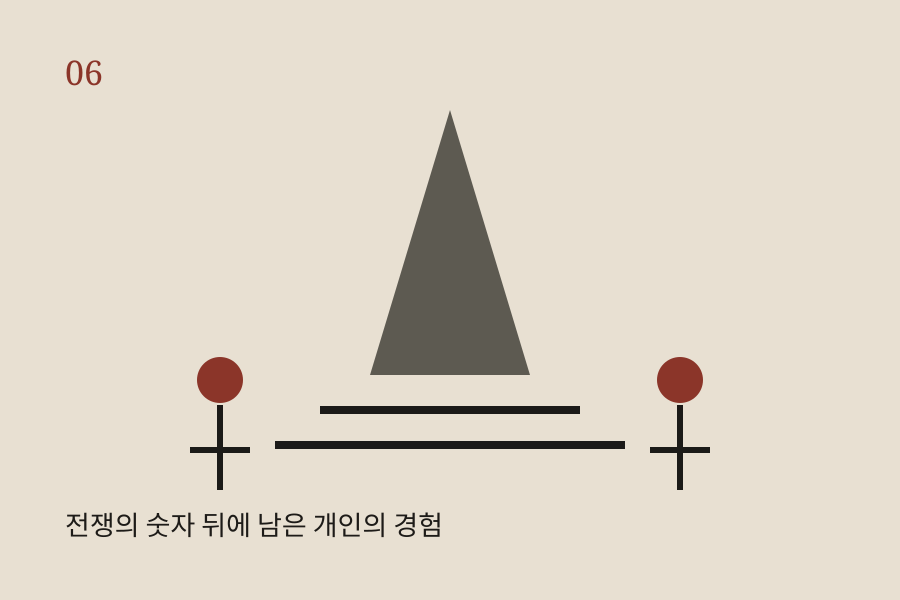
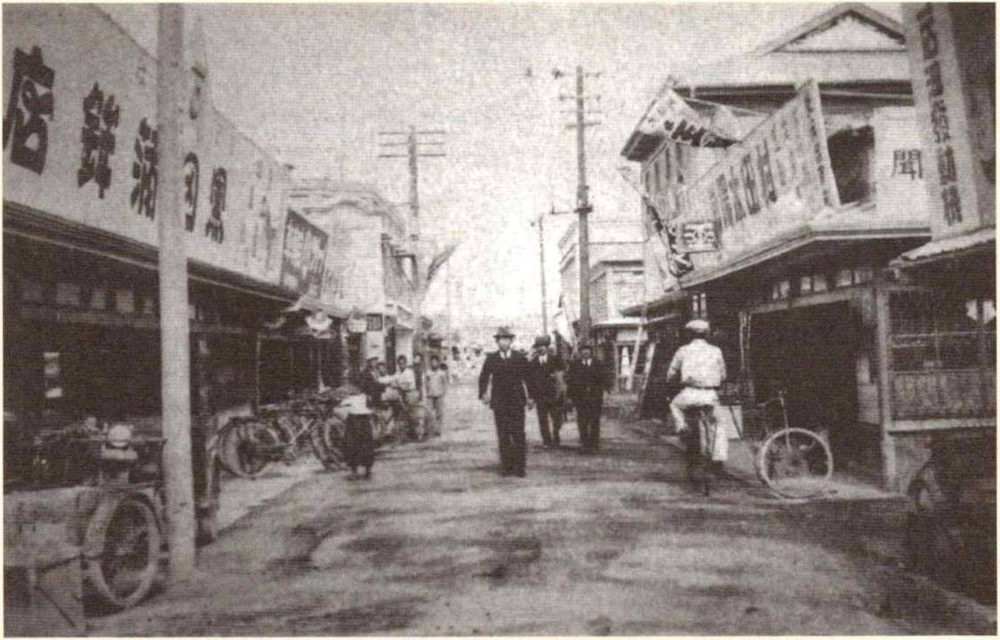
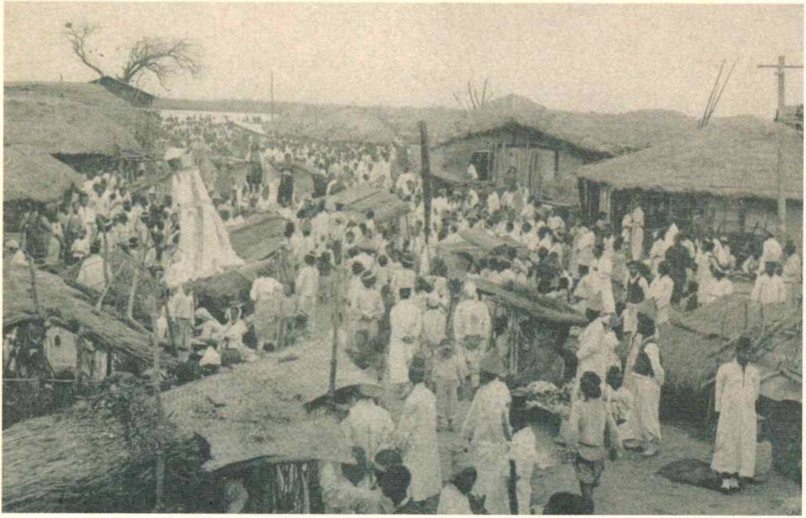
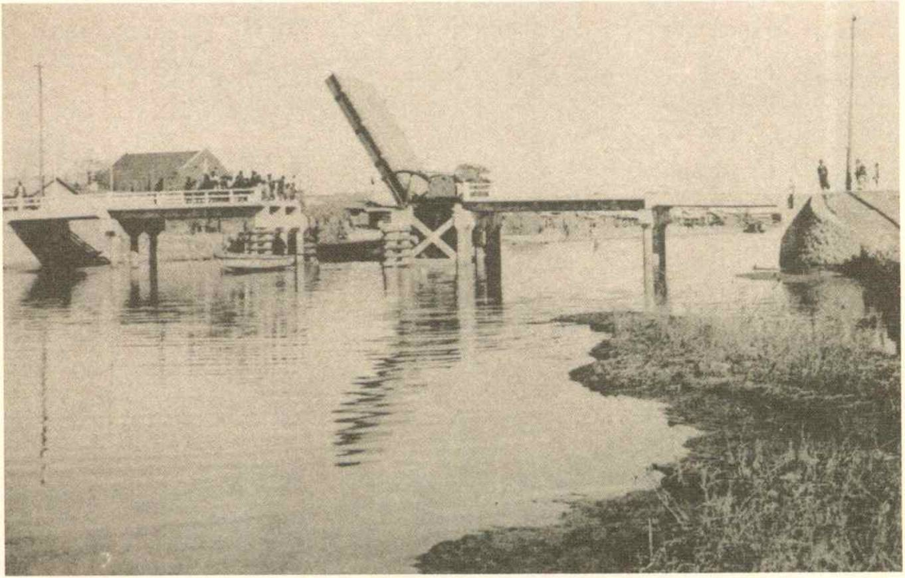
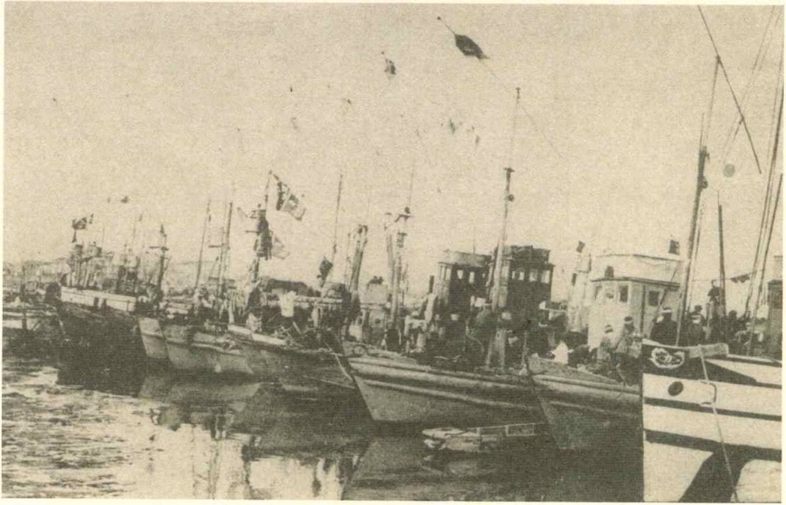

POHANG FIELD NOTES · 2026
포항,물길에서 전쟁까지
박물관에서 시작해 나루와 항구, 식민지기의 도시 기반시설, 그리고 1950년 포항전투의 기억까지. 교과서의 근현대사를 우리가 사는 도시의 길 위에서 다시 읽는다.
2026.10.17 SAT08:30–16:30포항고등학교 인문사회부포항고 학생 대상



도시의 흔적은 기념비에만 남지 않는다. 창고, 물길, 시장, 길의 방향도 사료가 된다.
01
두 개의 입구
학생에게 필요한 정보와 운영자에게 필요한 정보는 섞지 않았다. 공개 페이지에는 학생 개인정보나 내부 연락망을 두지 않는다.
02
하루의 시간축
‘유명한 곳을 많이 보는’ 일정이 아니다. 생활세계에서 항구도시, 식민지 기반시설, 전쟁의 기억으로 시대가 이동하도록 순서를 잡았다.
실선 대신 점선으로 연결한 것은 버스·도보 이동을 한눈에 보여주기 위한 안내선이다. 실제 도로 경로는 지도 앱에서 확인한다.
03
여섯 장면으로 읽는 포항
각 장소는 하나의 질문을 맡는다. 정답을 외우기보다 현장과 사료가 서로 맞는지 확인하는 것이 이번 답사의 방식이다.
04
사진으로 먼저 보는 답사
1930년대 거리·시장·교량·항구 사진을 현장에서 현재 풍경과 비교합니다.




자료: 『일제의 특별한 식민지 포항』 수록 역사사진·지도 중 답사 관련 자료를 교육용으로 발췌.